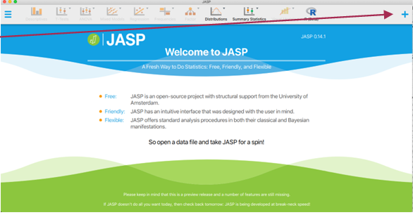
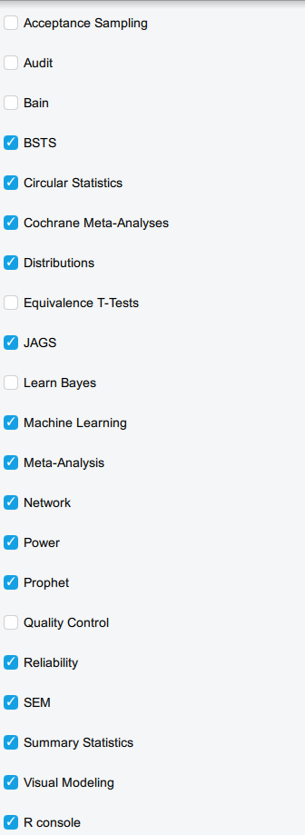
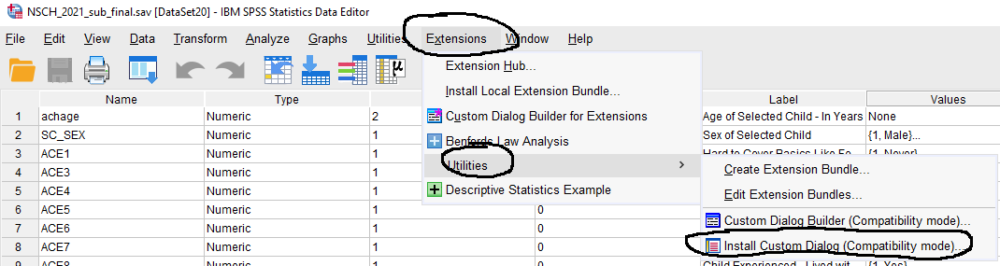

Introduction
All programs include additional functionality that allows you to conduct more specialized analyses. Here I show you how to install packages in JASP, jamovi and SPSS.
- Data integration
- Excel can be used with JMP
- Excel can be used with Tableau
- Excel can be used with NodeXL
- SPSS has an R plug in
- ArcGIS & QGIS can be used with R and Python
- Examples
- R data integration for SPSS: use R functionality from SPSS
- NodeXL: a software addon for excel that performs social network analyses
- PROCESS for SPSS & SAS: an addon to perform moderation, mediation and moderated mediation analyses
Installing modules in JASP
- To install a module in JASP click the "+" sign in the top right corner of the splash screen as shown below

- JASP is relatively new and so there are not a lot of additional modules yet. Below are the modules that I have installed.

- It is incredibly easy to install a module, simply click the check box and the module appears in the menu bar
❓ Your turn: Installing Modules in JASP
Installing modules in jamovi
- To install a module in jamovi, click the "+" sign to the right of the menu bar as shown below
- Then click on 'jamovi library'
- This will bring up all of the user defined functions that are all based on the R programming language!
❓ Your turn: Installing Modules in jamovi
Installing Extensions & Custom Dialog boxes in SPSS
SPSS offers a few different ways of incorporating additional packages. We will cover the two most common
- To install a custom dialog box go to 'Extensions' from the file menu, then "Utilities" and "Install Custom Dialog" as shown below

- Compatible custom dialog packages have the file extension .spd
- This requires you to identify and have the package downloaded onto your computer
One of the dialog packages I use most is called PROCESS written by Andrew Hayes. It provides a user interface for mediation, moderation and mediated moderation models. We review these models in Stats II. Click here to download part I of my notes on mediation, moderation and moderated mediation models I used for class based on the awesome book by Hayes , or here to download part II. This websitehas more information about the process macro.
❓ Your turn: Installing Custom Dialogs in SPSS
- The SPSS Extensions Hub has a lot of cool addons that are not written in SPSS, for example using Python and R
- These allow you to do analyses that R can do but using the SPSS interface
- You should browse through these extensions to see if there are any that are relevant to your work, as there are a lot of them
- To install one of the extensions go to 'Extensions' from the SPSS menu bar and click 'Extensions Hub'
- Let us search for a nice visualization package. Under the 'Category' tab click "Visualization'
- I am not an SPSS or Java programmer, so I am going to limit my search to R or Python extensions.
- Click 'Not Installed'
- Click 'Apply'
- You should see what I have below
-
Note: In order to run the extensions that are based on R or Python, those software packages need to be installed on your computer. There is actually an extension that installs Python and R for you called "Install Python and R packages."
-
For now, I will show you an example and if you do not want to install R onto your computer then you can stick with the SPSS Statistics Syntax files as applicable.
-
I will install the package called R-Graphics Mosaic and Association Plots. A mosaic plot is a special type of stacked bar chart. For two variables, the width of the columns is proportional to the number of observations in each level of the variable plotted on the horizontal axis. The vertical length of the bars is proportional to the number of observations in the second variable within each level of the first variable.
- Mosaic plots help show relationships and give a visual way to compare groups.
-
The SPSS syntax viewer will have information on how to access this from the file menu once the installation is complete
- You should see the image below. This is a nice way to visualize the association between these two variables. While we don't have time to go into many details, here is my read of this plot.
- The figure below shows a mosaic plot for data from the TransPop survey.
- The goal is to compare the distribution of Identity (trans and cis gender) by suicide attempts.
- If there was no relationship between identity and likelihood of attempting suicide, the boxes should be equal
❓ Your turn: Describe the Mosaic Plot above
Note: you can run the simple crosstabulation in SPSS to get the exact percentages
- Now, we can include the percentages on the chart. Ask me how I made the chart below :)